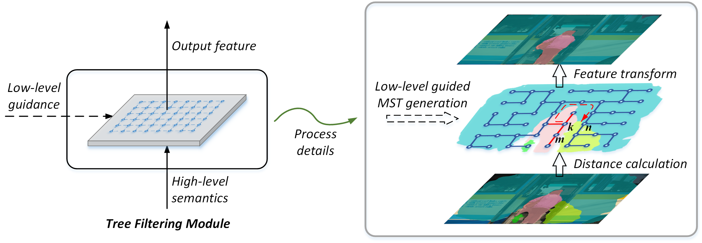

News: Our paper accepted by CVPR 2019 Long Beach, USA.
News: Our paper accepted by CVPR 2019 TRMTMCT Workshop, Long Beach, USA.
News: We give an oral presentation in ECCV 2018 COCO Workshop, Munich, Germany.

Conference Paper
Learnable Tree Filter for Structure-preserving Feature Transform
Lin Song*, Yanwei Li*, Zeming Li, Gang Yu, Hongbin Sun, Jian Sun, Nanning Zheng
Submitted to NeurIPS 2019.
FastPose: Towards Real-time Pose Estimation and Tracking via Scale-normalized Multi-task Networks
Jiabin Zhang, Zheng Zhu, Wei Zou, Peng Li, Hu Su, Yanwei Li, Guan Huang
Submitted to ICCV, 2019.
Attention-guided unified network for panoptic segmentation
Yanwei Li, Xinze Chen, Zheng Zhu, Lingxi Xie, Guan Huang, Dalong Du, Xingang Wang
Accepted by CVPR, 2019 [paper] [code]
Identity-Enhanced Network for Facial Expression Recognition
Yanwei Li, Xingang Wang, Shilei Zhang, Lingxi Xie, Wenqi Wu, Hongyuan Yu, Zheng Zhu
Accepted by ACCV, 2018 [paper]
Competition and Workshop
MicroSoft COCO Panoptic Challenge
Yanwei Li*, Naiyu Gao*, Chaoxu Guo, Xinze Chen, Qian Zhang, Guan Huang, Xin Zhao, Kaiqi Huang, Dalong Du, Chang Huang
Win 2nd place, Oral in ECCV Workshop, 2018. [presentation]
State-aware Re-identification Feature for Multi-target Multi-camera Tracking
Peng Li* , Jiabin Zhang* , Zheng Zhu*, Yanwei Li, Lu Jiang, Guan Huang
Accepted by CVPR TRMTMCT Workshop, 2019 [paper]